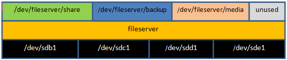

Linux Logical Volume Tutorial
Introduction
Logical Volume Management (LVM) introduces an abstraction between physical and logical storage that permits a more versatile use of filesystems. LVM uses the Linux device mapper feature (/dev/mapper).
https://en.wikipedia.org/wiki/Logical_Volume_Manager_(Linux)
So what's the device mapper? https://en.wikipedia.org/wiki/Device_mapper
The device mapper is a framework provided by the Linux kernel for mapping physical block devices onto higher-level virtual block devices. It forms the foundation of LVM2, software RAIDs and dm-crypt disk encryption, and offers additional features such as file system snapshots.
Device mapper works by passing data from a virtual block device, which is provided by the device mapper itself, to another block device. Data can be also modified in transition, which is performed, for example, in the case of device mapper providing disk encryption or simulation of unreliable hardware behavior.
Disks, partitions, and RAID devices are made of Physical Volumes, which are grouped into a Volume Group. A Volume Group is divided into small fixed-size chunks called Physical Extents, which are mapped 1-to-1 to Logical Extents.
Logical Extents are grouped into Logical Volumes, on which filesystems are created. https://www.howtoforge.com/linux_lvm
| Logical Volume Management |
|---|
| partition table |
|  |
Commands
Taken from the Linux Quick Reference Guide by Daniele Raffo at https://perso.crans.org/~raffo/books/linux-guide.pdf| LVM Commands | |||||
|---|---|---|---|---|---|
| PV commands | VG commands | LV commands | |||
pvs |
Report information about Physical Volumes | vgs |
Report information about Volume Groups | lvs |
Report information about Logical Volumes |
pvscan |
Scan all disks for Physical Volumes | vgscan |
Scan all disks for Volume Groups | lvscan |
Scan all disks for Logical Volumes |
pvdisplay |
Display Physical Volume attributes | vgdisplay |
Display Volume Group attributes | lvdisplay |
Display Logical Volume attributes |
pvck |
Check Physical Volume metadata | vgck |
Check Volume Group metadata | ||
pvcreate |
Initialize a disk or partition for use with LVM | vgcreate |
Create a Volume Group using Physical Volumes | lvcreate |
Create a Logical Volume in a Volume Group |
pvchange |
Change Physical Volume attributes | vgchange |
Change Volume Group attributes | lvchange |
Change Logical Volume attributes |
pvremove |
Remove a Physical Volume | vgremove |
Remove a Volume Group | lvremove |
Remove a Logical Volume |
pvresize |
Resize a disk or partition in use with LVM | vgmerge |
Merge two Volume Groups | lvresize |
Modify the size of a Logical Volume |
How to create a Logical Volume
- Add a new physical or virtual disk to the machine (eg; /dev/sda)
- Check it is detected -
lsblk
- Create a new partition on it (type 0x8E = Linux LVM) with
fdisk /dev/sda
- Initialize the Physical Volume to be used with LVM with
pvcreate /dev/sda1
- Create a Volume Group (
myvg0
) and define the size of Physical Extents to 8 Mb (default is 4Mb) withvgcreate -s 8M myvg0 /dev/sda1
- Or you could add the Physical Volume to an existing Volume Group with
vgextend myvg0 /dev/sda1
- Create a Logical Volume (size 1024Mb called
mylv
onmyvg0
) withlvcreate -L 1024M -n mylv myvg0
- Mount the Logical Volume and use it -
mount /dev/myvg0/mylv /mnt/work
(don't forget to create/mnt/work
directory first).
How to increase the size of a Logical Volume
- Add a new physical or virtual disk
- Partition the disk with
fdisk /dev/sdc
- Initialize the disk with
pvcreate /dev/sdc
- Add it to an existing Volume Group with
vgextend myvg0 /dev/sdc
- Extend the Logical Volume by 2 Gb with
lvextend -L 2048M /dev/myvg0/mylv
- Lastly, extend the filesystem with
resize2fs /dev/myvg0/mylv
How to reduce the size of a Logical Volume
- Shrink the system with
resize2fs /dev/myvg0/mylv 900M
OR - Shrink the system with
lvreduce -L 900M /dev/myvg0/mylv
OR - Shrink the system with
lvresize -L-900M /dev/myvg0/mylv
Finally, How to snapshot and backup a Logical Volume
- Create the snapshot just like another Logical Volume
lvcreate -s -L 1024M -n snapshot0 /dev/myvg0/mylv
- Backup the snapshot with
tar cvzf snapshot0.tar.gz snapshot0
- Delet the snapshot with
lvremove /dev/myvg0/snapshot0